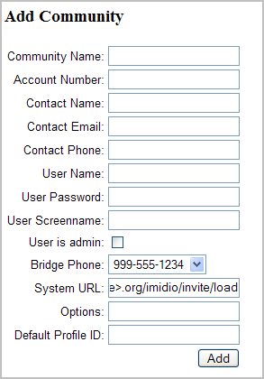
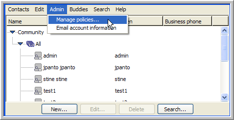
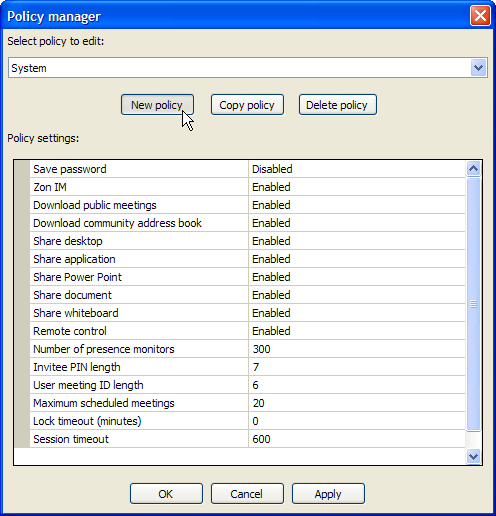
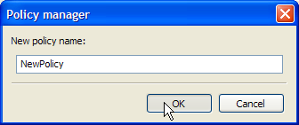
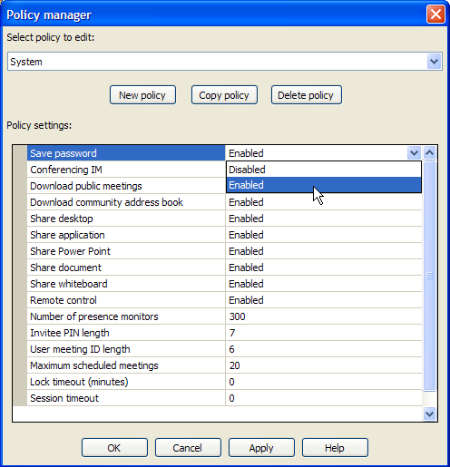
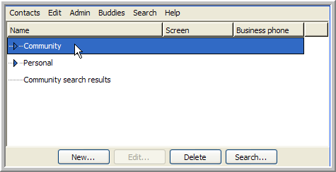
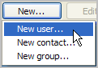
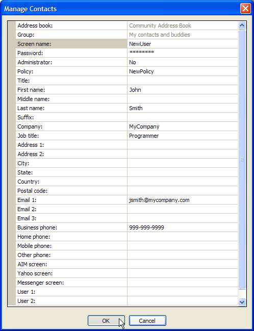
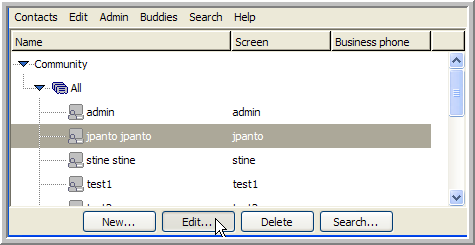
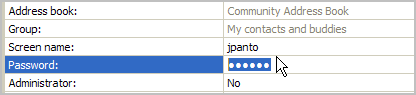

ICEcore Conference Operations Guide
This guide covers the initial configuration of ICEcore Conference. The term “ICEcore Conference” in this guide applies to all versions of ICEcore Conference unless otherwise noted.
Audience
This guide is intended for administrators.
Additional Documentation
You may find more information in additional ICEcore Conference documentation:
-
ICEcore Conference Help system
-
ICEcore Conference Quick Start Guide
-
ICEcore Conference User Guide
-
ICEcore Conference Server Installation Guide
Contents of this Manual
This manual provides information about the following:
-
System Overview
-
The Administration Console
-
ICEcore Conference Communities
-
Adding Users
-
Obtaining Server Status
-
Auditing System Events
-
ICEcore Conference Administration
-
Troubleshooting Strategies
-
LDAP User Authentication
Document Conventions
This manual uses the following conventions:
A greater-than symbol (>) is used to separate actions within a step and items in a cross-reference path.
A trademark symbol (®, ™, etc.) denotes a SiteScape trademark. An asterisk (*) denotes a third-party trademark.
When a single pathname can be written with a backslash for some platforms or a forward slash for other platforms, the pathname is presented with a backslash. Users of platforms that require a forward slash, such as Linux or UNIX, should use forward slashes as required by your software.
1.0 System Overview
This chapter provides an overview of the ICEcore Conference architecture and provides a description of the system components.
This chapter includes the following sections:
1.1 System Components
The ICEcore Conference Server is a highly modular suite of components that you can configure to run on one or more servers. Each component provides a core service to the system through a well-defined XML API. Since all communication occurs over an XML transport, the allocation of components to physical hardware is very flexible.
The system components are as follows:
-
XML Router - Routes XML data and APIs calls between other components.
-
Client Connector - Handles incoming connections from desktop clients, and establishes user sessions with the Session Manager component.
-
Session Manager - Tracks connected users and related presence information, and allows users to exchange instant messages.
-
Meeting Controller - Manages in-progress meetings, and dispatches meeting events to meeting participants.
-
Notification Server - Sends notification e-mails and IM messages on behalf of the Meeting Controller and Schedule Server components.
-
Address Book - Stores and retrieves community and personal address books, and system profile information.
-
Schedule Server - Stores and retrieves meeting schedule, options, and participant information.
-
Voice Bridge - Controls telephony resources, connects calls to conferences, makes outbound calls, and provides telephone access to meeting features.
-
Meeting Archiver Server - Collects audio, application/desktop shared images, and chat sessions to create Macromedia Flash-based meeting archives stored in a web accessible repository.
-
App Share Server - Forwards application shared data from meeting presenter to meeting participants, and manages remote control access to presenter desktop.
-
Invitation Web Service - Joins participants to meetings based on invitation URL.
-
External Web Service - Provides web service API for external parties as needed for integration with existing service provider systems.
1.2 Cluster Architecture
A cluster is a set of components providing services to a community of users. The following diagram illustrates the architecture of an example cluster. This example displays a multiple server configuration.
2.0 The Administration Console
This chapter describes the ICEcore Conference , including logging into the console and a description of the available tools.
This chapter includes the following sections:
2.1 Starting the Administration Console
ICEcore Conference provides a web-browser-based to assess the status of clusters and manage system communities. The URL for the depends on the setting of the global-config variable <portal-hname> defined at system installation time. The can be accessed using the following URL:
http://<portal-hname>/imidio/console/
Once you access this page, you need to log in. When the software is installed, a default Super Administrator account is created with the screen name admin and password admin. A Super Administrator has the authority to manage all communities versus Community Administrators, who only have administrative authority within their specific community or communities. However, a Super Administrator can be restricted to a single community by entering a community name when logging in.
2.2 Using the Administration Console
Use the to monitor the ICEcore Conference server environment. Use the tabs to perform the following functions:
-
Work with ICEcore Conference user communities
-
Obtain server and component status
-
Determine the system load
For each function, an operations menu is available in a shaded box on the left of the page. You can exit the at any time by clicking .
2.2.1 Component Status Page
Once you log on, you are on the main page of the > , which is a page similar to the following:
From this page, you can use the tabs to determine system status, manage communities or view system load. For each function, an operations menu is available in a shaded box on the left of the page. You can exit the at any time by clicking .
3.0 ICEcore Conference Communities
A community is a group of users, usually within the same company or within a specific division within an organization. Once you install and configure the ICEcore Conference software, you need to set up communities and administrators for those communities. Community-member contacts are displayed in the in the ICEcore Conference Client.When the ICEcore Conference software is installed, a default is created. This community provides the Super Administrator login and password information.
This chapter includes the following sections:
3.1 Managing Communities
You can manage ICEcore Conference communities with the ICEcore Conference . The tab provides tools for creating, deleting and modifying communities:
Use the tabs to perform the following functions:
-
Display all communities
-
Search for specific communities
-
Add a new community
-
Remove an existing community
-
Modify an existing community
3.2 Adding Communities
A default is created when you install the software. This contains the Super Administrator username and password. When you install ICEcore Conference for the first time, you should create at least one new community. This community should have a Community Administrator, usually the first user that is created in the community.
3.2.1 To Add a Community:
-
From the tab, click to display the form.
 -
In the field, type a community name.
NOTE:The name of the community should be descriptive, and should only contain ASCII characters.
-
In the field (Optional), type an account number.
NOTE:You can create an optional account number that you use for billing/cost center purposes. The field is alphanumeric.
-
In the field, type the name of the individual who is the primary contact for this community.
-
In the field, type the e-mail address of the primary contact.
-
In the field, type the phone number for the primary contact.
-
In the field, type the name of the community administrator for the community (the user who creates the other users in the community via the ICEcore Conference Client console). Enter the full name of the community administrator (for example, Bob Smith).
-
In the field, type a password for the community administrator.
-
In the field, type a screen name for the community administrator. This is the screen name that other ICEcore Conference users see for the community administrator when they access their ICEcore Conference clients.
-
Select the option to indicate that the user is a community administrator. Do not select this option if the first user in this community should not have administrative access.
-
Select the phone number of the voice bridge for this community from the drop-down list.
-
In the field, type the assigned system URL for community meeting invitations.
-
The field is currently reserved and should be left blank.
-
The is also a reserved field and should be left blank.
-
-
Once you have entered the new community data, click to create the community.
By default, when communities are defined, they are enabled. An enabled community is available for users to log into.
3.3 Viewing Communities
To view existing communities use the tab and then select the or the tool.
3.3.1 To Show All Communities
Use the link to display all of the communities on the system. If more communities exist in the system than can be displayed on a page, use the and buttons to scan the list of communities.
3.3.2 To Find a Community by Name
Use the link to display an entry field for the community name and a button:
You can enter the entire community name, or use the wildcard character to find a community. When a community that matches your search parameter is found, the table displays the matching communities.
For example:
The table contains the following values for each community returned in the search:
Operations – Operations provide tools that allow you to update, remove or enable/disable a community. The users of a disabled community cannot log into the system.
Community ID – The ID of the community that has been assigned by the database.
Community Name – The community name.
Account Number – The account number for the community, which may be used for billing/cost center purposes.
Contact Name – The primary contact for the community.
Contact Email – The e-mail address of the primary contact.
Contact Phone – The phone number of the primary contact.
User Name – The full name of the initial user of the community. Generally, the initial user is the community administrator.
User Password – The password for the initial user of the community.
Bridge Phone – The phone number for the voice bridge assigned to the community.
System URL – The URL that is used for community meeting invitation.
Account Type – The account type for the initial user. The account type may be either normal or admin.
Account Status – This indicates whether the community is enabled or disabled. A disabled community is not accessible by any of the community members.
3.4 Removing Communities
To delete existing communities, use the tab. You can either:
-
Use :
-
Click in the left column of the page to see a list of community names.
-
Select the community you want to delete.
-
Click .
-
-
Use or :
NOTE:In either case, each community in the table contains a link that removes that community.
-
Select or (to search by community name).
The table appears.
-
In the row containing the community you want to delete, click .
-
3.5 Updating Communities
To update or modify existing communities, use the tab. You can either:
-
Click in the left column of the page to display a list of community names. Select the community to update and click .
-
Use or to search by community name. In either case, each community in the community results table contains a link that updates that community.
4.0 Adding Users and Policies
After you establish your communities, you can add users to the system. Use the ICEcore Conference client to accomplish this task.
This chapter includes the following sections:
4.1 Creating Policies
A policy is a set of privileges that governs the availability and limitations of certain features for a given user. Each user has a policy. Typically, an Administrator creates a small number of policies (appropriate for different levels of users) and assigns a policy to each user.
To create a new policy:
-
From the ICEcore Conference client’s window, select the menu item.
 -
In the window, click the button.
 -
In the dialog that appears, type a name for your new policy and click .
 -
In the window, click on the right column of the policy setting you wish to change.
 -
After you adjust all of the policy settings, click .
NOTE:If you are creating a policy that is very similar to an existing policy, select the existing policy, click , provide a name for the new policy, and edit the settings.
When creating a new policy, you have the ability to configure the following policy settings:
The and policy settings are particularly useful for very large organizations. By disabling these settings, you enhance the performance of the client by not requiring it to download very large amounts of contact and public-meeting information that is most likely irrelevant for any one user.
Despite the utility of these settings, disabling them requires the user to search for contacts and public meetings that may be of interest to her or him. For example, if you disable the display of the for a user, the user has to use the feature to add a contact to the buddy list.
See the ICEcore Conference Online Help or ICEcore Conference User Guide for detailed information on searching.
In summary, if you decide to disable the display of either the or public meetings, be sure that your users have the information or training they need to use search to locate contacts and public meetings of interest.
4.2 Creating a New User
Once you establish a small number of policies that you want to apply to various groups of people in your organization, you can create user accounts.
To create a user account:
-
From the window, select the Address Book.
NOTE:If the Download Community Address Book feature is disabled, you may skip this step, and the remaining steps still create a new user properly. However, this step is very important when creating a contact or a new group.
-
Click in the lower-left corner of the window, and select the menu item.
 -
In the window, click items in the right column of the table to provide values for the new user's contact information.
-
Provide values for at least the required contact-list items.
To make the account reasonably usable, we recommend that you also provide first name, last name, and at least one e-mail address (so that the new user can receive the e-mail message). See the ICEcore Conference Online Help or ICEcore Conference User Guide for detailed information on these fields.
 -
Click .
ICEcore Conference creates the new user and a contact listing for that user.
4.3 Change the Policy for a User
-
In the window, select the user and click .
 -
Select the currently applied policy from the drop-down list.

-
Click .
4.4 Reset the Password for a User
-
In the window, select the user and click .
-
In the field, type the new password.
 -
Click .
5.0 Obtaining Server Status
The tab of the Administration Console provides a summary of the server components for any services that are directly connected to an XML Router or for the XML Routers themselves.This chapters includes the following sections:
5.1 Viewing Components
When you select the tab, the main page is the page. You can determine the status of components connected to the XML Router by looking at the table. The status of the XML Routers is displayed in the table. In both tables, the column shows whether the component is connected to the XML Routers.
The table has a number of columns for different attributes for each of the rows. The following table describes each column:
The table has a number of columns for different attributes for each of the rows. The following table describes each column:
5.2 Viewing Active Meetings
Select .
The View Active Meeting table appears. This table contains a list of active meetings with the following information:
The following meeting option values can be found in the column:
5.3 Determining Voice Port Status
Click the link for an active meeting. The table that appears provides the following information:
5.4 ICEcore Conference System Component Logging
You can adjust the logging level of ICEcore Conference components using the Administration Console. The initial page contains Set Logging tools for the system components. Once you have selected a component, you can modify the logging level for that component.
There are three levels for logging:
-
Error - this is the default logging level and only logs error conditions (creates smaller files).
-
Info - logs error conditions and also provides summary information on server tasks.
-
Debug - logs error conditions, summary information, and detailed debugging information.
IMPORTANT:Keep the default logging level at to minimize CPU and I/O loads.
Log files, in general, are written to the /var/log/iic directory, except for the web portal and external API server logs, which are written to files in the /usr/local/apache2/logs directory. Additional information may be found in the /var/log/messages directory.
5.5 Assessing System Load
The View Utilization tab is used to obtain metrics on server capacity. When you access the tab, the following page displays.
Use this page to view a number of different system load metrics (measuring system load over time). The load parameters the system monitors are:
The average and peak values for the load parameter are gathered by sampling the above parameters once a second over a half hour interval. For example, the following is a sample of the table:
The last time-measured values are in the following format:
<year>-<month>-<day>-<hour>-<min>-<sec>
These values also show the end of the sampling interval of the load parameter (in this case the number of users connected via ICEcore Conference clients).
6.0 Auditing System Events
ICEcore Conference provides the ability to monitor user and call record events, and to create files that can be exported or imported between other applications, such as a user database or a time tracking application.The system writes event logs in the /var/iic/cdr directory on the meeting controller hosts (call events) and the address book host (user and reservation event). If you have a multiple machine configuration, you can determine these hosts using the .Every day at 6 a.m. GMT (1 a.m. EST), the event logs are rotated. The active event log file is renamed to include a timestamp of when the rotation was performed. If this file is not imported and deleted within 120 days, it is automatically removed.
This chapter includes the following sections:
6.1 Real-Time Event Logs
You can configure the ICEcore Conference servers, either at installation time or later, to produce real-time event logs for call, user and meeting reservation events. The real-time interface provides the event data records as they are occur so that third-party systems may use them (for example, a billing system or cost accounting system, management reporting systems or user directory database). The records are delivered via a TCP connection to ICEcore Conference server hosts.
6.1.1 Determining Whether Real-time Events are Enabled
If the value of the enable_rt_logs file is set to yes, the system delivers the records to consumers connecting to ICEcore Conference hosts. If it is set to no, the system does not provide the real-time interface. If real-time records are required but not enabled, re-run the installer script to change the setting.
6.1.2 Determining Hosts and Ports
You can find the hosts and ports providing the real-time event records by examining the global configuration found in /opt/iic/conf/global-config directory on any ICEcore Conference host.
6.1.3 Call Record Host(s) and Port
The connected call record host(s) is specified by the controller_host array in the global-config. The port to use for the connection is specified by the rt_call_port variable.
6.1.4 User record host(s) and port
The connected user record host is specified by the addressbk_host array in the global-config file. The port to use for the connection is specified by the rt_user_port variable.
6.1.5 Reservation record host(s) and port
The connected user record host is specified by the addressbk_host array in the global-config file. The port to use for the connection is specified by the rt_rsrv_port variable.
6.1.6 Connecting to real-time event logs
When a consumer of real-time events connects to one of the event logs described above, the system sends the contents of the event log for the current day. Future events are sent to the consumer as they occur for the duration of the time that the consumer remains connected to the event log host. Each night, the event logs are rotated. Once the logs have been rotated, the prior day’s events are no longer available to the real-time event log consumer. If needed, you can obtain them from the time stamped event log files ( call+<timestamp>.elg, user+<timestamp>.elg and rsrv+<timestamp>.elg) in the /var/iic/cdr directory on the same host used for the real-time event log connection. The time stamp on the files refers to the time that the log rotation happened.
6.2 User Record Format
You can synchronize your databases whenever you add, update or delete users. The User Record format provides a standard comma-delimited text file that allows you to import or export a user list to other enterprise databases.
The user records are stored in /var/iic/cdr/user.elg on the host specified in addressbk_host in the global-config file for the cluster. The file is rotated daily to /var/iic/cdr/user+<timestamp>.log. You may want to place /var/iic/cdr on a network file system to facilitate the fetching of user records. Otherwise, you can fetch the call data records using tools such as ssh/scp.
Importing user record data is handled using the addressbk.update_contact API call, which is described in the External API document. The database service outputs the following when users are added, updated, or deleted. The following table describes each of the records, their type, and the maximum length allowed:
NOTE:Updated user records have zeros for Default Phone and Default Email fields. Deleted records have only the following content fields: , , and (i.e. ).
6.3 Call Data Records
Call data record files are created and stored by ICEcore Conference and allow you to track information about each event. The comma-delimited text file records each event, including meeting times and duration, call connection times, and which clients joined the meetings. This information is useful when determining billing.
The call data records are stored in /var/iic/cdr/calls.elg on the host specified in controller_host in the global-config file for the cluster. The file is rotated daily to /var/iic/cdr/calls+<timestamp>.log. Once the call data record of one of the rotated files is exported, you may delete it. You may want to place /var/iic/cdr on a network file system to ease exporting call data records. Otherwise, you can fetch the call data records using tools such as ssh/scp.
The database service outputs the following information:
6.4 Reservation Data Records
Reservation Data Records (RDR) are data records that are formatted as lines of quoted comma-separated values. The values are as follows:
6.4.1 Reservation Data Record (RDR) Interface
The Reservation Data Records are available to any consumers connected via TCP to an RDR port. RDRs are also written to files so that consumers can initialize and not lose billing data.
For RDRs written to a file, after a configurable interval of time, the file is closed and renamed to include a timestamp (e.g. /var/iic/cdr/rsrv-2005-01-28-08-27.log). Then a new RDR file is then created.
When a real-time RDR consumer connects to the RDR port, all current RDR records are sent to the RDR consumer. Current RDR records are stored in /var/iic/cdr/rsrv.elg file until the log rotation time. A real-time RDR consumer can get the current information by fetching all of the available rotated RDR files in the /var/iic/cdr directory.
6.5 Chat Audit Log Configuration
Chat audit logging can be configured at system installation or reconfiguration time using the install.sh script.
The chat audit logs are placed in /var/iic/chatlog on the hosts assigned to run the XML router and meeting controller(s). ICEcore Conference IM and ICEcore Conference chat room messages are written to the file /var/iic/chatlog/chat.log. Meeting chat messages are written to /var/iic/chatlog/mtgchat.log.
The chat messages contained in chat.log are XML stanzas:
<message type='<"chat"|"groupchat">' from='<from_jid>' to='<to_jid>'
time='<timestamp>' >
<body> ... </body><x xmlns='jabber:x:event' />
</message>
The from_jid and to_jid tags have the forms:
<screenname>@<xmlrouter_hostname>/<resource>
<resource> is a session identifier in the case where the message type is “ chat” and it identifies the sender screen name in the case of “ groupchat” type messages.
The timestamp has the form <YYYY><MM><DD>"T"<hh><mm><ss> and uses GMT time.
Each chat message is logged to a line in mtgchat.log. The each line contains comma-separated fields. Each field is quoted with double quotes at the beginning and end of the field (for example, “ field value”).
The fields are as follows:
7.0 ICEcore Conference Administration
Use the following commands to administer ICEcore Conference. Run these commands on the ICEcore Conference servers using the Command Line interface (not the ICEcore Conference ).
This chapter includes the following sections:
7.1 Starting and Stopping ICEcore Conference Services
The following topics cover how you start and stop ICEcore Conference clusters and individual machines.
7.1.1 Starting and Stopping the Cluster
ICEcore Conference services for the entire cluster may be started and stopped using the control-cluster.sh script described in the ICEcore Conference Installation Guide.
To Stop ICEcore Conference Services:
Type:
./control-cluster.sh --cluster <your-cluster> [--single-host <your-host>] stop
To Start ICEcore Conference Services:
Type:
./control-cluster.sh --cluster <your-cluster> [--single-host <your-host>] start
NOTE:Use the --single-host argument if there is only one host in your cluster.
7.1.2 Starting and Stopping Individual Machines
To start or stop services on only one of the machines on the cluster, use the script:
/opt/iic/conf/control-services.sh.
To Stop ICEcore Conference Services with control-services.sh:
Type:
/opt/iic/conf/control-services.sh stop
To Start ICEcore Conference Services with control-services.sh:
Type:
/opt/iic/conf/control-services.sh start
7.2 Backing Up the Database
The system automatically backs up the database on a daily basis. The backups are in /var/iic/db-backups on the db-host (as defined in /opt/iic/conf/global-config). Each backup is a tar(1) archive compressed using the bzip21) utility. The current daily backup is called db.tar.bz2.
You can also back up the database at any arbitrary time using the pg_dump(1) utility. The state of the database in the backup reflects all committed transactions at the time pg_dump(1) is run. Any updates done after the backup is started are ignored.
The following command line shows how to dump the contents of the database to a tar(1) archive named db.tar:
pg_dump -b -F t -f db.tar <db_name>
bzip2 db.tar
You can execute pg_dump on the db_host machine or set up the PostgreSQL environment variables according to the database configuration in /opt/iic/conf/global-config.
7.3 Restoring the Database
Restoring an archived database is done using the pg_restore command. To restore a backup from a bzip2 compressed tar file, use the following command:
bunzip2 db.tar.bz2
pg_restore -d <db_name> db.tar
You can execute pg_restore(1) on the db_host machine or set up the PostgreSQL environment variables according to the database configuration in /opt/iic/conf/global-config.
A.0 LDAP User Authentication
NOTE:The password for admin always comes from the ICEcore Conference internal database so that an administrator is able to log on even if directory servers are not available. Because the password must be passed over the network in plain text, we recommend deployment using SSL.
LDAP User Authentication Input File
You can modify the sitescape-conferencing/cluster-prototype/ldap.xml.in input file to use ActiveDirectory synchronization instead of eDirectory synchronization and to map additional LDAP attributes to ICEcore Conference contact fields.
To use ActiveDirectory synchronization, you need to comment out the eDirectory section in the file and uncomment out the Active Directory section, see examples below:
eDirectory Section:
<!-- configuration for eDirectory and generic LDAP server -->
<attributes>
<attribute>
...
</attribute>
</attributes>
Move the closing XML comment tag ( -->) after the ...generic LDAP server comment so that it follows the </attributes> tag under the eDirectory section:
<!-- configuration for eDirectory and generic LDAP server
<attributes>
<attribute>
...
</attribute>
</attributes>
-->
ActiveDirectory Section:
<!-- configuration for ActiveDirectory
<attributes>
<attribute>
...
</attribute>
</attributes>
-->
Move the closing XML comment tag ( -->) after the </attributes> tag so that it follows the configuration for ActiveDirectory comment:
<!-- configuration for ActiveDirectory -->
<attributes>
<attribute>
...
</attribute>
</attributes>
ICEcore Conference Field Names
Use these names to configure the mapping of LDAP attributes to ICEcore Conference contact fields:
“screenname” - “title” - “firstname” - “middlename” - “lastname” - “suffix” - “company” - “jobtitle” - “address1” - “address2” - “state” - “country” - “postalcode” - “aimname” - “email” - “email2” - “email3” - “busphone” - “homephone” - “mobilephone” - “otherphone” - “extension” - “msnscreen” - “yahooscreen” - “aimscreen” - “user1” - “user2” - “defphone”
NOTE:For eDirectory, the uid attribute is mapped to the ICEcore Conference screenname by default. If you want to use the cn LDAP attribute instead of the uid attribute, you can change this mapping to map the cn attribute to the ICEcore Conference screenname.
Address Book Configuration (Synchronization)
Execute /opt/iic/bin/ldap-sync.sh <portal-server-hname> to perform the initial synchronization.
NOTE:After starting the server, wait 20 seconds or so before executing this command; if you do not get an XML message back, you probably did not wait long enough.
This script displays an XML message if it fails (the fault message is clearly visible); if it succeeds, the XML data contains a single number that is the number of users actually synchronized. You can run this script manually as needed, or configured to run periodically using cron (the default setting is for it to run daily).
B.0 Troubleshooting Strategies
This chapter presents several troubleshooting strategies in the following sections:
B.1 Verify That Everything is Running
Run the following command and verify that all services say running:
/opt/iic/conf/control-services.sh status
Run the following command and verify that two jabberd services are running:
ps -fA | grep jabberd
There should be processes listening on the following ports:
netstat -nl | grep 5222
netstat -nl | grep 2182
There should be processes listening on the following port on each IP:
netstat -l | grep http
B.2 Enable Debug Logging
-
For most services:
Edit /opt/iic/conf/config.xml and change debug level from error to debug.
-
For jabberd:
Edit /opt/iic/jabberd/jabber.xml and search for elogger. Under this element, find the debug attribute and set to 1.
-
Restart services using /opt/iic/conf/control-services.sh stop and /opt/iic/conf/control-services.sh start.
-
Logs are in /var/log/iic, except for the client connector ( jadc2s) which uses syslog.
-
you can also enable logging from the console, but that setting only lasts until the server is restarted and must be enabled service-by-service.
-
Note that logs are rotated according to the size and number specified in config.xml, so in some cases these numbers must be made larger to capture enough tracing.
-
Apache logs are in /usr/local/apache2/logs.
B.3 Service watchdog
Most system services are run by nanny, which monitors the service process and restarts it automatically if it fails for any reason.
If an administrator e-mail is configured when the system is installed, e-mails are sent when any ICEcore Conference services fail and need to be restarted. Nanny also outputs to syslog (i.e. /var/log/messages) when a service status changes.
B.4 Error codes
May turn up in server or client logs:
// Common error codes
Failed = -1000,
InvalidPIN = -1001,
InvalidSessionID = -1002,
InvalidMeetingID = -1003,
InvalidSubmeetingID = -1004,
InvalidUserID = -1005,
InvalidParticipantID = -1006,
InvalidServiceID = -1007,
DuplicateID = -1008,
InvalidParameter = -1009,
ParameterParseError = -1010,
DuplicateUserName = -1011,
PINAllocationError = -1012,
NoClientConnection = -1013,
PINExpired = -1014,
PINNotValidYet = -1015,
// Error codes from controller
InvalidAddress = -2000,
NotAuthorized = -2001,
NotMember = -2002,
InsufficientResources = -2003,
NotLoaded = -2004,
AlreadyConnected = -2005,
NotConnected = -2006,
NotActive = -2007,
NoPhoneNumber = -2008,
InAnotherMeeting = -2009,
MeetingExists = -2010,
InvalidPassword = -2011,
Disconnected = -2012,
NotWhileLecture = -2013,
MeetingLocked = -2014,
PhoneNumberNotFound = -2015,
MeetingStartTimeout = -2016,
NoPort = -2017,
MtgArchiverTimeout = -2018,
MeetParamNotFound = -2019,
// Error codes from voice service
InvalidCallID = -3000,
NotConferenced = -3001,
MissingPIN = -3002,
NoAvailResource = -3003,
// Error codes from address book/schedule
DBAccessError = -4000,
AddressBookError = -4001,
DuplicateContact = -4002,
ProfileSystemDeleteError = -4003,
ProfileInUseError = -4004,
UnknownGroup = -4005,
CommunitySystemDeleteError = -4006,
CommunityNotFound = -4007,
CommunityStatusNotFound = -4008,
CommunityDisabled = -4009,
CommunityNameNotUnique = -4010,
DirectoryNotFound = -4011,
ProfileNotFound = -4012,
DuplicateUsername = -4013,
MaxMeetingsExceeded = -4014,
ProfileNameNotUnique = -4015,
InstantMeetingNotFound = -4016,
UserNotFound = -4017,
MaxPresenceExceeded = -4018,
InvalidScreenName = -4019,
InvalidScreenPassword = -4020,
CommunityOwnerDeleteError = -4021,
// Error from app share
NoShareSession = -5000,
ShareFailed = -5001,
B.5 More advanced checks
To reveal jabber start-up errors that happened before normal logging was enabled (usually only a database problem stops it at this point):
/etc/rc.d/iicjabberd stop
cd /opt/iic/jabberd
jabberd/jabberd -H /opt/iic/jabberd -D
B.6 ICEcore Conference Client
The following symptoms and possible causes are visible to the user of the ICEcore Conference client.
Symptom: The client displays the error “ ”
Possible Causes:
-
Hostname of the XML Router does not resolve properly on the client machine.
Check \Documents and Settings\<user-name>\Application Data\meeting\zon.log (Win32) or ~/.meeting/zon.log (Linux) in the system drive of the client machine for lines containing the text Unable to resolve hostname.
-
The client concentrator, jadc2s, is not running.
-
Verify that the jadc2s process is running on all XML Router hosts.
-
Verify that port 5222 is in LISTEN state.
-
Look in /var/log/iic/jadc2s.log for more information.
-
-
The XML Router, jabberd, is not running.
-
Verify that the jabberd processes are running on all XML Router hosts.
-
Verify that a system component port is in LISTEN state.
-
Look in /var/log/iic/xmlrouter_error.log for more information.
-
-
The meeting controller is not running or not connected
-
Check \Documents and Settings\<user-name>\Application Data\meeting\zon.log (Win32) or ~/.meeting/zon.log (Linux) in the system drive of the client machine for lines containing the text “err=-995, msg=Internal Timeout, code=-1000, id=rpc_controllerauth”.
-
If Step A is true, check the meeting controller log files for more information and check the network connectivity between the meeting controller host and the XML Router host.
-
-
The address book is not running or not connected
-
Check \Documents and Settings\<user-name>\Application Data\meeting\zon.log (Win32) or ~/.meeting/zon.log (Linux) in the system drive of the client machine for lines containing the text “err=-995, msg=Internal Timeout, code=-1000, id=rpc_versionck”.
-
If Step A is true, check that the address book daemon is running. If it is, check the address book log files in /var/log/iic for more information and check the network connectivity between the address book host and the XML Router host.
-
Symptom: The client displays “Contact data fetch failed” in the dialog box status line.
Possible Causes:
The address book is not running or is not connected:
-
Check \Documents and Settings\<user-name>\Application Data\meeting\zon.log (Win32) or ~/.meeting/zon.log (Linux) in the system drive of the client machine for lines containing the text “err=-995, msg=Internal Timeout, code=-1000, id=rpc_getdata23”.
-
If you find this text, check that the address book daemon is running. If it is, check the address book log files for more information and check the network connectivity between the address book host and the XML Router host.
B.7 Voice Bridge
Symptom: Voice bridge prompts “ ” even though the meeting is available and both the password and the PIN are correct.
Possible Causes:
The meeting controller is not responding to requests from the voice bridge.
-
Check the network connectivity between the voice bridge and the XML Router for excessive packet loss.
-
If there is no excessive packet loss, check the meeting controller log.
B.8 Meeting Archiver
Symptom: If meeting archiver fails to process the meeting, the system administer receives e-mail notification.
Possible Causes:
-
The archiver may be out of disk space. Free up disk space by removing old files.
-
The archiver failed to fetch raw recording data.
Solution:
Run the following command to restart the meeting archiver:
/etc/init.d/iicmtgarchiver stop
/etc/init.d/iicmtgarchiver start
The meeting archiver processes the failed meeting recordings.
Symptom: The meeting flash movie does not contain all of the necessary components, for example, there is no voice recording with the movie.
Possible Causes:
-
The raw data for each meeting is stored for seven days after the end of the meeting before it is deleted. If you move the meeting instance from /var/mtgspool/done to var/mtgspool/active within the seven day window, the meeting instance is formatted with a meeting ID followed by the meeting start time. For example, 555555-2007-02-22-12-16-16.
-
Once the file for the meeting instance has been renamed, restart the meeting archiver, as documented above.
C.0 Legal Notices
SiteScape, Inc., makes no representations or warranties with respect to the contents or use of this documentation, and specifically disclaims any express or implied warranties of merchantability or fitness for any particular purpose. Further, SiteScape, Inc., reserves the right to revise this publication and to make changes to its content, at any time, without obligation to notify any person or entity of such revisions or changes.
Further, SiteScape, Inc., makes no representations or warranties with respect to any software, and specifically disclaims any express or implied warranties of merchantability or fitness for any particular purpose. Further, SiteScape, Inc., reserves the right to make changes to any and all parts of SiteScape software, at any time, without any obligation to notify any person or entity of such changes.
Any products or technical information provided under this Agreement may be subject to U.S. export controls and the trade laws of other countries. You agree to comply with all export control regulations and to obtain any required licenses or classification to export, re-export or import deliverables. You agree not to export or re-export to entities on the current U.S. export exclusion lists or to any embargoed or terrorist countries as specified in the U.S. export laws. You agree to not use deliverables for prohibited nuclear, missile, or chemical biological weaponry end uses.
SiteScape, Inc., has intellectual property rights relating to technology embodied in the product that is described in this document.
- SiteScape, Inc.
- 12 Clock Tower Place, Suite 210
- Maynard, MA 021754
- U.S.A.
- www.SiteScape.com
Third-Party Materials
- All third-party trademarks are the property of their respective owners.